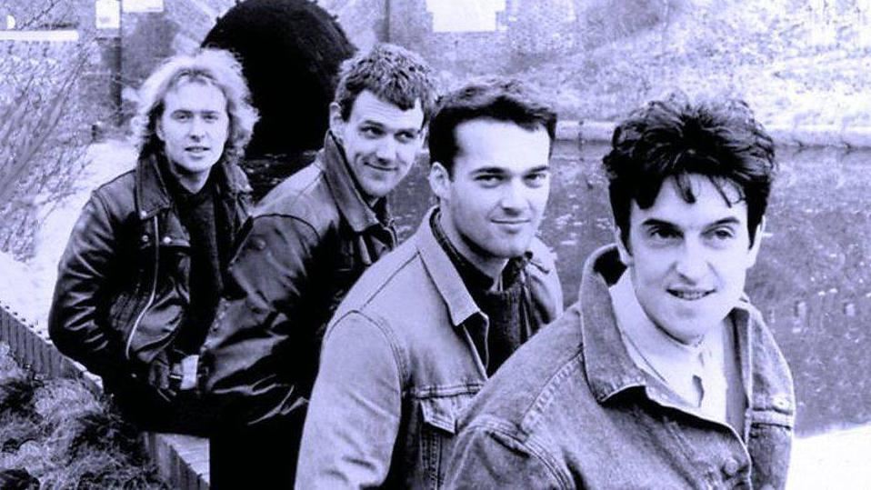

-
Adrian Vale - "The Saint" : Lead Singer ● ○ ○ ○
Adrian is the calm but charismatic frontman of Stars of Heaven. He is known
for his deep, emotional voice and mysterious stage presence. During concerts, he rarely
speaks between songs and often stands completely still before the first song begins.
He usually wears a long black coat, silver rings, and a cross necklace. Fans gave
him the nickname “The Saint” because of his quiet and almost supernatural presence on stage.
-
Damien Cross - "Blackstar" : Lead Guitarist ○ ● ○ ○
Damien is the mysterious member of the band. He is famous for long guitar
solos filled with distortion, echo, and reverb. Many of the band's darker melodies were
written by Damien late at night. His usual style includes a black leather jacket,
dark hair, and a custom guitar with a white star painted on it. His dark style and powerful
guitar sound earned him the nickname “Blackstar.”
-
Vincent Ray - “Neon” : Bassist ○ ○ ● ○
Vincent is the most energetic and social member of Stars of Heaven. He enjoys
talking to fans and bringing energy to live performances. His style is heavily
inspired by the 1980s, with bright colors, oversized jackets, and neon clothing. His bass lines
are simple but very recognizable. Because he almost always wears something
bright on stage, fans started calling him “Neon.”
-
Leon Graves - “Thunder” : Drummer ○ ○ ○ ●
Leon is the loudest and most powerful member of the band on stage. He is
known for heavy drum beats, huge drum fills, and occasionally breaking drumsticks during
concerts. Despite his aggressive playing style, Leon is actually the quietest
member of the group when he is off stage. His long and powerful drum solos gave him the nickname “Thunder.”
-
About The Band
Stars of Heaven was formed around 1980 when Adrian Vale and Damien Cross
met at a small underground music club. They began writing dark rock songs together
and later recruited Vincent Ray and Leon
The band became known for mixing rock, post-punk, new wave, and gothic
rock, creating a dark but atmospheric sound.
Fans often described the four members like this:
The Saint — The Voice
Blackstar — The Darkness
Neon — The Energy
Thunder — The Power